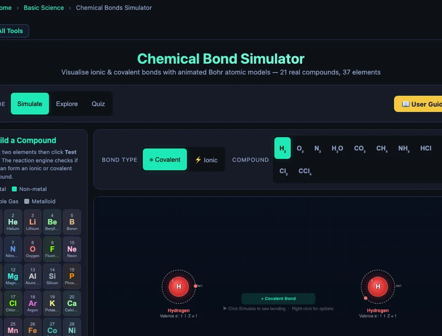

Build Your Atom: A Complete Guide to the Interactive Chemical Bonding Simulator

- Build Your Atom is the Build a Compound module of NHIT VisualLab's free Chemical Bonds tool: pick any two of 37 elements, click Test Bond, and an animated Bohr model shows the actual electron transfer or sharing.
- The reaction engine classifies the bond by Pauling electronegativity difference: ΔEN = |EN₁ − EN₂| — above 1.7 is ionic, 0.5 to 1.7 is polar covalent, below 0.5 is nonpolar covalent.
- Noble gases (He, Ne, Ar, Kr) return "no compound forms" because their full outer shells already satisfy the octet rule, demonstrating why Group 18 does not bond.
Here is a scene that plays out in almost every chemistry classroom at some point. A student can recite that sodium chloride is ionic because "sodium gives its electron to chlorine." Ask them to draw what actually happens — which electron, from which shell, going where — and the room goes quiet. The words are there. The picture is not. The Build Your Atom simulator exists to close that gap in one click.
The tool is the Build a Compound module inside NHIT VisualLab's free Chemical Bonds Simulator. You pick any two elements from a palette of 37, press Test Bond, and watch a real-time animated Bohr model show you exactly what happens — electrons flying across the canvas, ion charges fading in, the compound formula appearing at the bottom. It's not a video. It's not a textbook diagram. It's a simulation that responds to your choices.
Why Chemical Bonding Is Harder to Teach Than It Looks
Bonding is conceptually simple. Two atoms need stable outer shells; they either share electrons or one hands them off. Every syllabus says this. Every textbook illustrates NaCl and H₂O. So why does it still trip students up on exams?
The problem is that bonding is dynamic, and static diagrams can't show dynamics. A dot-and-cross diagram of NaCl shows the end state — Na⁺ with an empty outer shell, Cl⁻ with a complete one. It doesn't show the sodium's lone valence electron leaving its orbit, the moment of transfer, the charge appearing on the nucleus. Students memorise the picture rather than understanding the process.
There's a second issue. When you teach "metals lose electrons, non-metals gain them," you have to immediately add exceptions: hydrogen acts like a non-metal despite being in Group 1; carbon forms covalent bonds to itself; noble gases do neither. That list of exceptions lands on students before the rule has had time to feel intuitive. What they need is a sandbox — somewhere to probe the rule themselves and discover where the edges are.
What the 37-Element Atom Builder Contains
The element palette is colour-coded across four categories. Metals (gold) include your alkali metals, alkaline earths, and a selection of transition metals — Na, K, Li, Mg, Ca, Fe, Cu, Zn, and more. Non-metals (teal) include H, C, N, O, F, Cl, Br, I, S, P, Se. Noble gases (purple) are He, Ne, Ar, Kr. Metalloids (grey) include B, Si.
Behind each symbol is a complete data record: atomic number Z, Pauling electronegativity, Bohr shell configuration, typical ion charge, and element type. Hovering the nucleus during any animation opens a live tooltip showing all of this — so students can check the configuration of iron (2,8,14,2) mid-simulation without leaving the tab.
The Bohr shell capacity follows the \(2n^2\) rule for the first three shells:
\[\text{Shell capacity} = 2n^2 \quad \Rightarrow \quad n=1: 2e^{-}, \quad n=2: 8e^{-}, \quad n=3: 18e^{-}\]
That's why Period 1 has two elements (H, He), Period 2 has eight (Li → Ne), and Period 3 also fills with eight before the 4s orbital opens. The simulator's animations make this visible rather than theoretical — when you watch sodium's single n=3 electron orbit a nucleus labelled "11," the numbers stop being abstract.
The Three-Click Test: Exactly What the Simulator Does
The workflow is deliberately simple.
Click Element 1. A card appears in Slot 1 showing the element's symbol, name, and shell configuration. Metals glow gold; non-metals teal.
Click Element 2. Slot 2 fills. Both atoms are now visible on the canvas side, orbiting electrons animated, nucleus glowing with the element's assigned colour.
Click Test Bond. This is where the reaction engine runs. It calculates the electronegativity difference:
\[\Delta\text{EN} = |\text{EN}_1 - \text{EN}_2|\]
If \(\Delta\text{EN} > 1.7\), the bond is classified ionic. The animation shows electrons arcing from the donor atom to the acceptor, charge labels fading in (Na⁺ in red, Cl⁻ in blue), and electrostatic attraction arrows drawing the ions together. If \(\Delta\text{EN}\) falls between 0.5 and 1.7, the bond is polar covalent — shared electron pairs oscillate between the two nuclei. Below 0.5, it's nonpolar: electrons shuttle symmetrically. The formula and compound name appear at the bottom of the canvas when the 5.5-second animation completes.
If the combination can't form a valid compound from the database — noble gas + anything, for example — the result panel says so explicitly, explaining why. That negative result is just as educational as a positive one.
Six Combinations Every Student Should Try (and What They'll See)
The 37 available elements produce dozens of interesting pairings. These six are worth making compulsory — each one teaches something different.
H + H → H₂ (The Baseline)
Both atoms are identical. \(\Delta\text{EN} = 0.00\). The two shared electrons oscillate exactly symmetrically. No polarity, no ion charges — just two atoms making each other stable by sharing. It's the purest covalent bond in the database and a clean starting point before introducing any complication.
Na + Cl → NaCl (The Classic Ionic)
Sodium has shells [2,8,1] and EN = 0.93. Chlorine has shells [2,8,7] and EN = 3.16. \(\Delta\text{EN} = 2.23\) — well above the ionic threshold. The animation shows sodium's lone n=3 electron arc across to chlorine's valence shell, completing chlorine's octet (2,8,7 → 2,8,8) while sodium drops to the stable neon configuration (2,8). Ion labels appear: Na⁺ and Cl⁻. The result banner reads "NaCl — Ionic compound (1 e⁻ transferred)." Table salt, rendered in full atomic motion.
O + H + H → H₂O (Polar Covalent)
Select oxygen as Element 1 and hydrogen as Element 2. The simulator treats this as an O–H bond (\(\Delta\text{EN} = 1.24\), polar covalent). Two H atoms attach to oxygen's valence shell, each sharing one pair, leaving oxygen with two lone pairs. The canvas shows the bond pairs oscillating with a visible bias toward oxygen — the electrons spend more time near the more electronegative atom. This is the foundation of water's dipole moment, hydrogen bonding, and why water is such a strange liquid.
N + N → N₂ (The Triple Bond)
Nitrogen has 5 valence electrons and needs 3 more. Two nitrogen atoms each contribute 3 electrons to a shared pool — three bonding pairs, six electrons total. The animation renders three bond lines and six shared electron dots oscillating between the nuclei. Bond energy: 945 kJ/mol — among the strongest in chemistry. That's why atmospheric nitrogen is so unreactive. It takes an enormous input of energy to pull those two atoms apart, which is exactly why the Haber process requires 450 °C and 200 atmospheres.
Li + F → LiF (The Highest EN Difference)
Lithium's EN is 0.98. Fluorine's is 3.98 — the highest of any element. \(\Delta\text{EN} = 3.00\), the largest diatomic gap in the entire database. The ionic animation shows lithium's single electron arcing to fluorine almost instantly. The result: Li⁺ achieves the helium configuration (shell [2]), F⁻ achieves neon (shell [2,8]). Both reach their nearest noble gas configuration in a single electron transfer. Used in nuclear reactors and high-performance lithium batteries — stability has real engineering applications.
He (or Ne, Ar, Kr) + Anything → No Compound
Select any noble gas and any other element, then click Test Bond. The result panel returns a clear message: no compound forms. This isn't a glitch. Noble gases have full outer shells — He with 2, Ne with 2,8, Ar with 2,8,8, Kr with 2,8,18,8. They have no electron gap to fill, no surplus electron to donate. The octet rule is satisfied before bonding begins. This "failed" test is one of the most useful teaching moments in the tool. Students who have just built NaCl and H₂O will immediately understand why Group 18 behaves differently.

Complex Ionic Compounds: The Al₂O₃ Charge Balance
One of the more striking presets in the simulator is aluminium oxide. Aluminium forms Al³⁺ (losing 3 valence electrons from shells [2,8,3]); oxygen forms O²⁻ (gaining 2 electrons to complete its [2,6] → [2,8] octet). The net charge must be zero, so neither a 1:1 nor a 2:2 ratio works. The answer comes from the lowest common multiple:
\[\text{LCM}(3,\,2) = 6 \quad \Longrightarrow \quad 2\,\text{Al}^{3+} \text{ gives } 6e^{-}, \quad 3\,\text{O}^{2-} \text{ takes } 6e^{-} \quad \Rightarrow \quad \text{Al}_2\text{O}_3\]
The animation shows this: two aluminium atoms on the left, three oxygen atoms stacked on the right. Six electrons arc across in sequence. Each aluminium gives away 3; each oxygen receives 2. The formula emerges from charge balance, not memorisation — and seeing it animated makes the cross-multiplication rule feel inevitable rather than arbitrary.
Running Build Your Atom in a 45-Minute Class
Warm-up (5 min). Open the simulator on a projector and ask: "Without clicking Test Bond — do you think hydrogen and chlorine will share or transfer?" Take a show of hands. Then click. The polar covalent HCl animation plays. Ask: what surprised you? The discussion usually surfaces EN difference before you've written it on the board.
Prediction round (10 min). Give students a printed table with six element pairs — H+H, Na+Cl, Mg+O, N+N, He+Na, Ca+F+F — and ask them to predict: ionic, polar covalent, nonpolar covalent, or no bond? They write their reasoning. No computers yet.
Build phase (15 min). Students open the simulator and test each pair. They record what the result panel says, compare it to their prediction, and note why they were wrong (if they were). Noble gas + anything is a deliberate trap — almost everyone predicts a bond and gets the "no compound forms" result. That failure is the lesson.
Debrief (10 min). Come back together. Work through the EN values for each pair. Show the \(\Delta\text{EN} = 1.7\) threshold on the board. Point out the HF edge case (EN diff = 1.78 — technically above the ionic threshold, but HF is covalent; rules have limits). For cross-linking depth, pair this lesson with the Interactive Periodic Table Simulator guide which covers how the 37-element database maps to the periodic table and how period and group determine reactivity.
Exit ticket (5 min). Switch the simulator to Quiz mode. Three randomised questions. Students write their answers on paper before seeing the quiz feedback. The quiz draws from real compound data — bond type, electron count, EN difference — so every question is grounded in what they just built.
Try It Yourself
All tools below are free — no account, no download.
Key Takeaways
- Build a Compound lets students freely select any two of 37 elements and watch the Bohr model animate the exact bonding process — no preset required, no prediction needed in advance.
- The reaction engine uses the Pauling electronegativity difference (\(\Delta\text{EN}\)) to classify bonds: above 1.7 is ionic (electron transfer), 0.5–1.7 is polar covalent (unequal sharing), below 0.5 is nonpolar covalent (symmetric sharing).
- Noble gases (He, Ne, Ar, Kr) always return "no compound forms" — their full outer shells are the best live demonstration of the octet rule in the entire database.
- Lithium–Fluorine (\(\Delta\text{EN} = 3.00\)) is the most ionic diatomic pair available; the single-electron transfer from Li [2,1] to F [2,7] is both visually dramatic and chemically instructive.
- Complex ionic compounds like Al₂O₃ show charge balancing in action — 2 Al³⁺ atoms each donate 3 electrons, 3 O²⁻ atoms each accept 2, and the LCM formula emerges from the animation rather than from a memorised rule.
- The four-mode structure — Build a Compound, Simulate presets, Explore concept cards, Quiz — lets a single 45-minute class move from discovery through understanding to retrieval practice without switching tabs.
Frequently Asked Questions
What is the Build Your Atom simulator and how does it work?
Build Your Atom is the Build a Compound module inside the NHIT VisualLab Chemical Bonds tool. You select any two elements from a palette of 37 (colour-coded as metal, non-metal, noble gas, or metalloid), then click Test Bond. A reaction engine checks their valence electrons and electronegativity difference, then launches an animated Bohr atomic model showing either an ionic electron transfer or a covalent electron-sharing animation with sound effects. No login or download is needed.
Which elements are available in the atom builder?
The simulator includes 37 elements: H, He, Li, Be, B, C, N, O, F, Ne, Na, Mg, Al, Si, P, S, Cl, Ar, K, Ca, Cr, Mn, Fe, Co, Ni, Cu, Zn, Br, Se, Kr, Sr, Ag, Cd, Sn, I, Ba, and Pb. Each element has its atomic number Z, Bohr shell configuration, Pauling electronegativity, typical ion charge, and element type stored in the database. Hovering the nucleus during animation shows a live tooltip with all these values.
What happens when you try to bond a noble gas in the simulator?
When you select a noble gas (He, Ne, Ar, Kr) as either element and click Test Bond, the simulator returns a "no compound forms" result. This is chemically correct — noble gases have completely filled outer shells (He: 2, Ne: 2,8, Ar: 2,8,8, Kr: 2,8,18,8) and therefore have no tendency to gain, lose, or share electrons. The result panel explains why, which makes it an excellent teaching moment for the octet rule.
How does the simulator decide if a bond is ionic or covalent?
The reaction engine uses the Pauling electronegativity difference (ΔEN) between the two selected elements. If ΔEN is greater than 1.7, the bond is classified as ionic (electron transfer). If ΔEN is between 0.5 and 1.7, it is polar covalent (sharing with unequal pull). If ΔEN is below 0.5, it is nonpolar covalent (equal sharing). The simulator also checks whether a valid compound formula can be constructed from the ion charges in the database before launching the animation.
Can Build Your Atom be used for GCSE, A-Level, or AP Chemistry?
Yes. The simulator covers the core bonding concepts on all three syllabi: valence electrons, octet rule, ionic bond formation (electron transfer, ion charges), covalent bond formation (single, double, triple bonds), electronegativity, polar vs non-polar molecules, and properties of ionic vs covalent compounds. The Quiz mode generates randomised multiple-choice questions drawn from all 37 elements and 21 compound presets, making it useful for exam revision at GCSE, A-Level, AP, and IB Chemistry level.
Chemistry becomes intuitive the moment students stop reading about electron transfer and start watching it happen. That's the gap Build Your Atom was designed to close — one element selection at a time.
Open the Chemical Bonds Simulator, select Na and Cl, click Test Bond, and see for yourself what a textbook diagram can never fully show you.